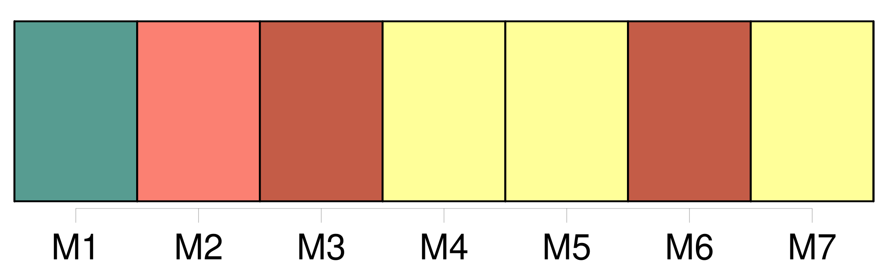
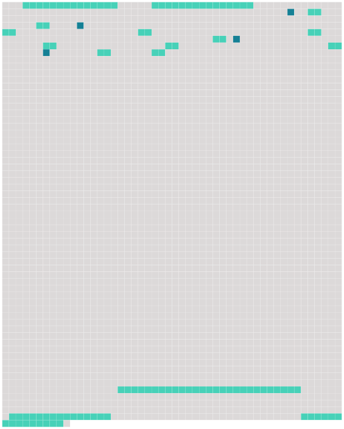

Longueur nb maillons : 20 mentions |
 |
Article X : [Comité chargé de l'examen de l'application des mesures adoptées par la Commission]
La Commission établit [un comité chargé de l'examen de l'application des mesures adoptées par la Commission] , composé des représentants désignés à cet effet par chaque membre de la Commission, qui peuvent être accompagnés des experts et conseillers dont ces membres jugent la présence opportune. [3 phrases]
Dans l'exercice de [ses] fonctions, [le comité] peut, le cas échéant, et avec l'agrément de la Commission, consulter toute autre organisation de gestion des pêcheries, toute autre organisation technique ou scientifique, compétente sur le thème de cette consultation, et peut solliciter des conseils d'experts, en tant que de besoin, cas par cas. [1 phrases] [Le comité] s'efforce d'adopter [ses] rapports et recommandations par consensus. [1 phrases]
À la demande d'un membre quelconque [du comité] , les opinions de ce membre sur tout ou partie des rapports seront également reproduites. [1 phrases]
[Le comité] tient au moins une réunion par an, de préférence à l'occasion de la réunion ordinaire de la Commission. [1 phrases]
[Le comité] peut convoquer d'autres réunions, à la demande d'au moins deux ( 2 ) membres de la Commission, sous réserve qu'une majorité de membres appuie cette demande. [1 phrases]
[Le comité] exerce [ses] fonctions conformément aux règles de procédures, directives et instructions adoptées par la Commission. [1 phrases]
Pour appuyer les travaux [du comité] , le personnel de la Commission doit : [59 phrases]
Chaque partie doit, dans les meilleurs délais, par l'intermédiaire du directeur, informer [le comité chargé de l'examen de l'application des mesures adoptées par la Commission établi conformément aux dispositions de l'article X de la présente convention] : [1 phrases]
Chaque partie : |
 |
Il est possible de télécharger la ressource sur la page Ortolang |
Si vous avez des questions ou vous voyez des erreurs, merci d'envoyer un mail à silvia.federzoni89@gmail.com |